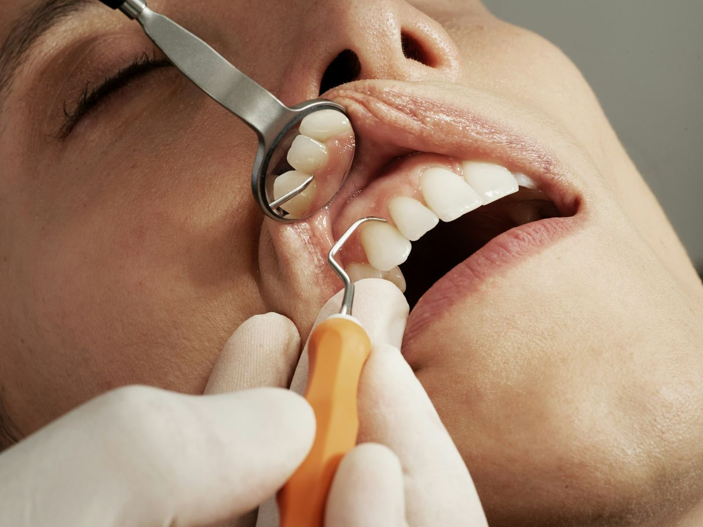
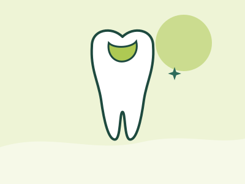

Everyday care
Fillings
When decay is found early, your dentist removes the damaged part of the tooth and restores it with a white, tooth-coloured filling. It’s usually one straightforward appointment.
Mon to Thu 8 am to 5 pm, Fri 8 am to 4:30 pm


How a filling works
Decay is caused by bacteria that produce acid and soften the tooth. Once a cavity forms, the tooth can’t repair itself. Your dentist removes the softened, decayed part and fills the space to restore the tooth’s shape and seal it.
Fillings can also repair small chips and worn areas. The best material depends on the size and position of the filling and the forces on that tooth, and your dentist will explain the options.
Why it’s worth treating decay early
Decay doesn’t heal on its own. Left alone, it tends to move deeper into the tooth.
- Stage 1
Early decay
Often no pain at all. Found at a check-up or on an X-ray.
- Stage 2
A filling
Decayed material is removed and the tooth is restored with white filling material.
- If left untreated
Deeper damage
Decay can reach the nerve, and the tooth may then need root canal therapy.
- At worst
Losing the tooth
Some teeth become too damaged to save and need to be removed.
Benefits and things to consider
Your dentist will explain the benefits, risks and alternatives that apply to you.
Possible benefits
- Stops decay spreading further into the tooth
- Usually completed in one appointment
- Tooth-coloured material blends in with your teeth
Things to consider
- Fillings can wear, chip or need replacing over time
- Large cavities may be better suited to a crown
- Teeth can be sensitive for a short time afterwards
Alternatives to ask about
- A crown for heavily damaged teeth
- Monitoring very early decay with extra prevention, where suitable
Before and after your appointment
Always follow the instructions your dentist gives you for your own treatment.
- Straight afterIf you’ve had local anaesthetic, avoid hot drinks and chewing until the numbness wears off, so you don’t bite your lip or cheek.
- The next few daysMild sensitivity is common and usually settles. Call us if your bite feels high or pain gets worse.
- Long termBrush twice daily with fluoride toothpaste, clean between teeth and keep up regular check-ups.
Questions about fillings
Cost and payment
The cost depends on what your mouth needs, so it can only be worked out after an examination. Fees are always explained before treatment begins.
With private health insurance extras cover, your fund may contribute. Costs and payment
Will I need an injection?
Many fillings are done with local anaesthetic so you stay comfortable. Your dentist will talk this through with you before starting.
Can my old silver fillings be replaced?
Ask your dentist at your check-up. They can tell you whether replacing an existing filling makes sense for that tooth.
How do I know if I need a filling?
Early decay often has no symptoms, which is why regular check-ups matter. Sensitivity to sweet, hot or cold food can be a sign, so mention it if you notice it.
Ready to book?
Book online or call our Edmonton reception team. Not sure what you need? Book a consultation and your dentist will talk you through the options.
Ask a question about fillingsRelated treatments
Not sure which one you need? Your dentist will talk you through the options at your appointment.